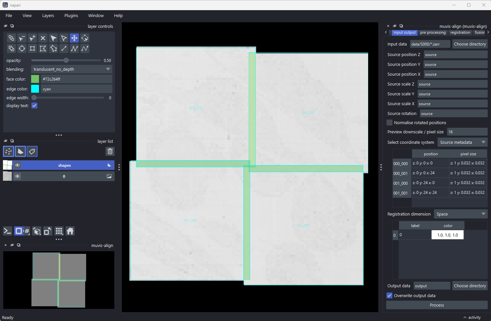
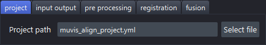
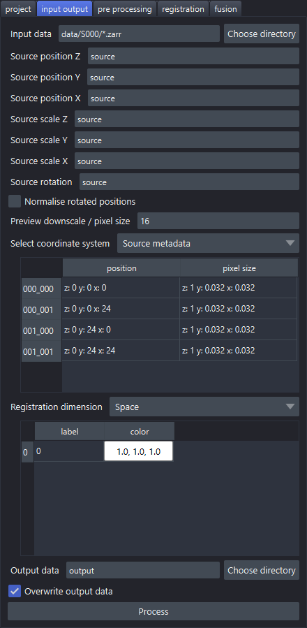
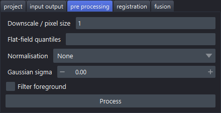
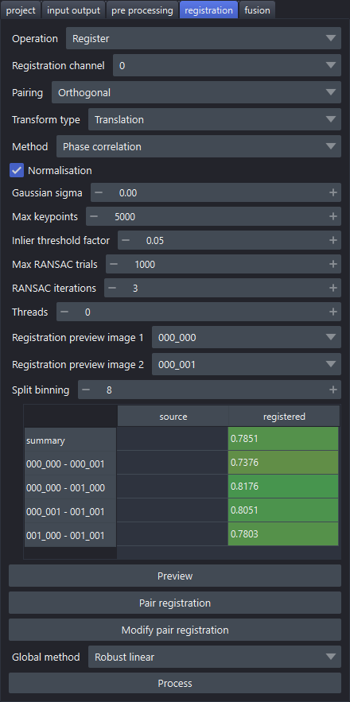
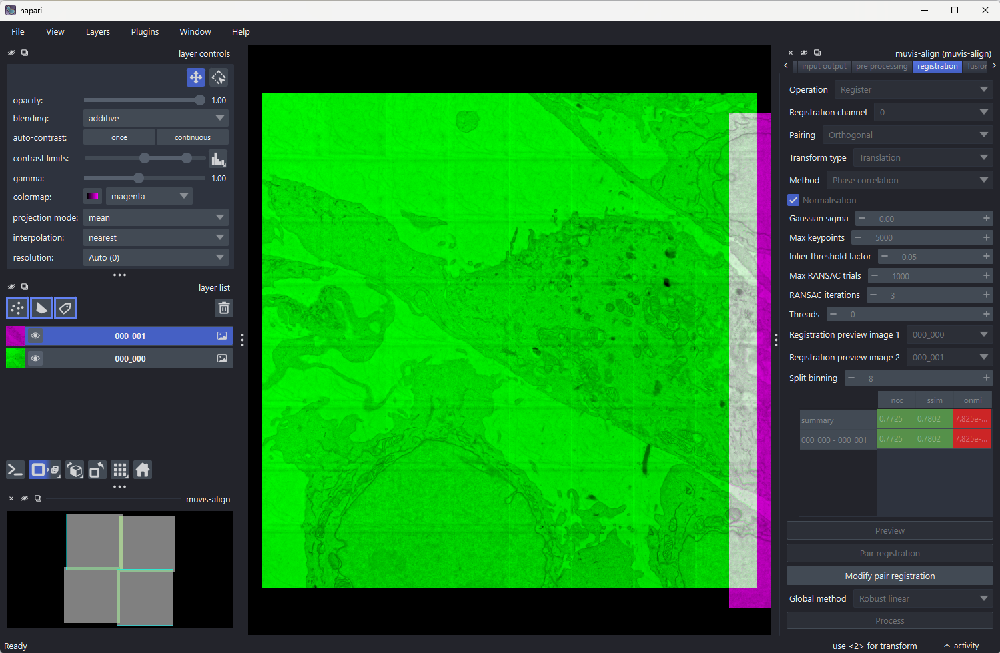
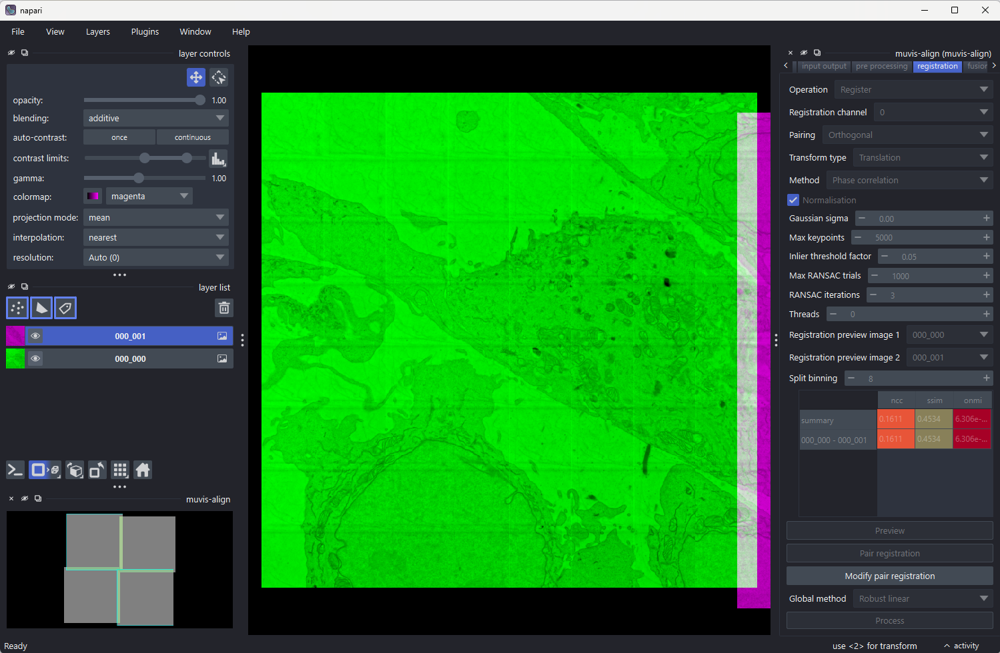
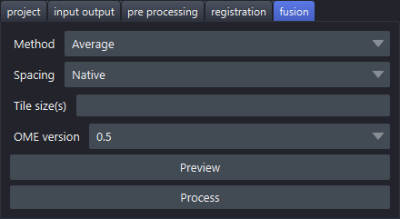

Step by step in napari
A walk through the plugin, one tab at a time: every parameter on it, and what each of its
buttons does. The screenshots are of a 2×2 tile set (data/S000/*.zarr in this repository),
taken after registering it. For how the plugin stores its settings, see
the napari plugin.
Opening the plugin
Start napari and open Plugins → muvis-align.

- On the right, the plugin itself: one tab per step, run from left to right.
- At the bottom left, the muvis-align overview: a small map of where the sources are, which stays put while you zoom into the main view.
- In the main view, the sources at their positions, with each overlap between two sources drawn as a green shape.
A tab is enabled once the step before it has run: at the start only project is. Each tab ends in a Process button that runs its step. While a step runs, the plugin's other widgets are disabled, the button reads Cancel (it asks before cancelling, and the partial result is discarded), and its progress shows in napari's activity panel at the bottom right.
Hover over any parameter to see its description.
1. Project

| Parameter | Description |
|---|---|
| Project path | The project file (muvis_align_project.yml by default) |
Select file chooses an existing project file, or names a new one. An existing project opens with its settings in every tab; a new one is created with the defaults. Either way the next tabs are enabled. Every change on any tab is written straight back to this file, so the project reopens as you left it.
2. Input output

| Parameter | Description |
|---|---|
| Input data | The sources: a file, a folder or a wildcard pattern such as data/*/*.tiff (TIFF, OME-TIFF, Zarr, OME-Zarr) |
| Source position Z / Y / X | Where each source's position comes from: source reads it from the file's metadata, or an expression over the file name, such as fn[-2]*24 (the second-last number in the name, times 24) |
| Source scale Z / Y / X | The pixel size, in the same way: source, a number, or an expression |
| Source rotation | The rotation, in the same way |
| Normalise rotated positions | Turn a rotated layout straight: positions are turned back by the sources' rotation, or by the tile grid's own angle where the metadata gives none |
| Preview downscale / pixel size | Resolution of the view: a downscale factor (e.g. 16) or a pixel size with unit (e.g. 10um) |
| Select coordinate system | Which positions the metadata table shows: the sources' own (Source metadata), or the registered ones once there are any |
| Metadata table | Read-only: each source's position and pixel size, ordered by (z, y, x) position |
| Registration dimension | What the sources are spread over: Space (tiles side by side), Z (a stack of slices), C (channels of the same field) or T (time points) |
| Channels table | Each channel's label and colour; click a colour cell to pick a colour |
| Output data | The output folder, relative to the project file |
| Overwrite output data | Overwrite any existing output |
Process reads the sources' metadata and draws their layout in the view and the overview, without reading the image data in full. If the output folder holds a registration from an earlier run, it is loaded too, and the plugin carries on from where that run stopped. If that registration was made with different source position, scale or rotation settings, the plugin asks whether to Reload those settings or Discard the earlier output.
3. Pre processing

These apply to the images used for registration only: the fused output is made from the original sources.
| Parameter | Description |
|---|---|
| Downscale / pixel size | Resolution to register at: a downscale factor (e.g. 2) or a pixel size with unit (e.g. 10um). Usually the largest single speed-up |
| Flat-field quantiles | One or two quantiles for flat-field correction, e.g. 0.5 or 0.01,0.99; empty for none |
| Normalisation | Single (each tile on its own), Global (over all tiles) or None |
| Gaussian sigma | Gaussian blur before registration; 0 or empty for none |
| Filter foreground | Leave out tiles with little image signal, such as empty tiles |
Process pre-processes the sources and shows the result in the view, then moves on to the registration tab. Running it is optional: registration pre-processes the sources itself when they have not been yet. Running it again after a registration makes that registration out of date, as it was made from the previous images.
4. Registration

Choose the Operation first, as it decides what the rest of the run does:
- Register: register the sources, then fuse them on the fusion tab.
- Merge: fuse the sources at their metadata positions, without registering. Process
only moves on to the fusion tab. The output is named
mergedrather thanregistered. - Convert: write each source out as its own OME-Zarr at its metadata position, with
no registration and no fusion. Each source keeps its own pyramid levels; nothing is
resampled. Process writes them to a
converted/output folder. Worth doing first for sources without a pyramid, which make every preview slow.
Settings only some methods read are greyed out for the others.
| Parameter | Description |
|---|---|
| Operation | Register, Merge or Convert, as above |
| Registration channel | The channel to register on |
| Pairing | Which sources are registered against each other: Default (multiview-stitcher's own), Orthogonal (leaves out diagonal and very small overlaps), Stack (consecutive sources) or Split: 2D x/y first (each plane's or channel's tiles first, then the stitched planes or channels against each other) |
| Transform type | Translation, Rigid, Affine or Similarity |
| Method | Pairwise registration: Phase correlation, SIFT, ORB, CPD, Elastix or ANTs |
| Normalisation | SIFT, ORB and CPD: normalise each overlap before registering it (pre-processing's applies to every method) |
| Gaussian sigma | SIFT, ORB and CPD: Gaussian blur of each overlap; 0 or empty for none (pre-processing's applies to every method) |
| Max keypoints | SIFT, ORB and CPD: the most keypoints per image (CPD keeps the largest) |
| Inlier threshold factor | SIFT and ORB: RANSAC's inlier threshold, relative (0 to 1) |
| Max RANSAC trials | SIFT and ORB: the most RANSAC trials |
| RANSAC iterations | SIFT and ORB: the number of RANSAC runs |
| Threads | Pair registrations run in parallel; 0 or empty to choose automatically |
| Registration preview image 1 / 2 | The pair that Preview and Modify pair registration work on |
| Split binning | Split pairing only: the binning of the stitched planes or channels when registering them against each other (1 is the pre-processed pixel size) |
| Metrics table | Read-only: each pair's registration quality, from source positions and once registered, ordered by position. The summary row is over all pairs |
| Global method | How the pair registrations are resolved into one position per source: Robust linear (fast, for large projects, translation or rigid only), Global optimisation (iterative, slow for many tiles), Linear two-pass (fastest, less robust to bad pairs) or Shortest paths |
The buttons:
- Preview registers just the selected pair and shows the two overlaps with their matches, with the pair's metrics in the table. Much faster than a full run while trying out parameters. To choose the pair, use the two dropdowns, click an overlap shape in the view, or click a pair's row in the metrics table.
- Pair registration registers every pair.
- Modify pair registration shows the selected pair in green and purple, to move one onto the other by hand with napari's transform tools. The pair's metrics follow the change, and the rest of the plugin is disabled meanwhile. Press it again to finish: it asks whether to store the change, which then replaces that pair's registration. See Modifying a pair registration below.
- Process runs the global registration, which resolves the pair registrations into a
position for each source, and shows the registered layout. It runs pair registration
first if that has not been done. It saves the result in the output folder:
pair_mappings.json,mappings.jsonandmappings.csv(the transforms),metrics.json, and an RO-Crate (ro-crate-metadata.json) describing the run.
Modifying a pair registration
Where two sources overlap, the green and purple images add up: matching detail shows grey, and a misalignment shows as green and purple edges side by side. The metrics table shows that one pair while you move it, coloured from red (poor) to green (good).
A good overlap: the strip at the right edge, where the two tiles overlap, is grey, and the metrics are high (ncc 0.77, ssim 0.78).

The same pair, moved slightly to the right: the overlap shows colour fringes, and the metrics drop (ncc 0.16, ssim 0.45).

Move the selected layer with the transform tool (press 2 in the view) until the overlap
is grey and the metrics are as high as they go, then press Modify pair registration
again to store it.
5. Fusion

| Parameter | Description |
|---|---|
| Method | How overlapping sources combine: Average, Exclusive, Additive or Compose |
| Spacing | Output pixel size: Native (each level at the sources' own pixel sizes, never upsampled), Mean, Min (highest resolution) or Max (lowest resolution) |
| Block size | Block size of the output: its OME-Zarr chunks, which are also the blocks fusion works in, or its TIFF tiles. Automatic (4096) is fastest; a smaller size makes smaller files to view but costs fusion time. See Block size |
| OME version | OME-Zarr version to write: 0.4, 0.5 or 0.6 |
The buttons:
- Preview fuses at the view's resolution and shows the result, which stays quick for a large dataset.
- Process exports the full-resolution fusion to the output folder, as
registered(ormerged). It first asks to confirm, with an estimate of the output size, and runs any registration still missing. It also writes an RO-Crate inside the OME-Zarr describing the acquisition, and updates the one in the output folder.